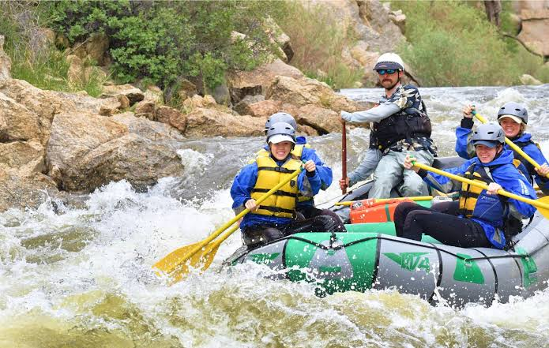
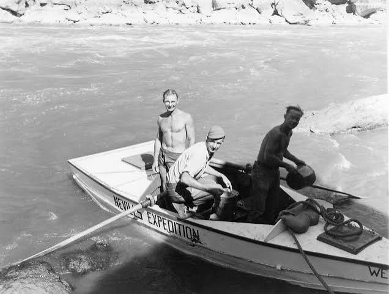
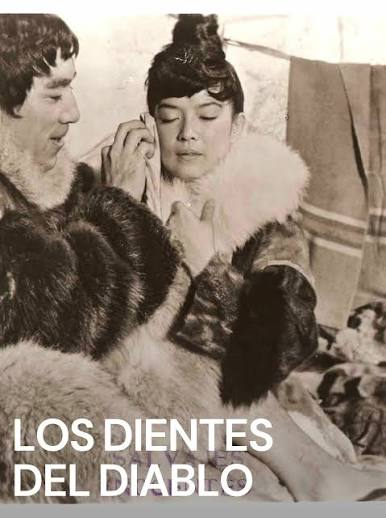
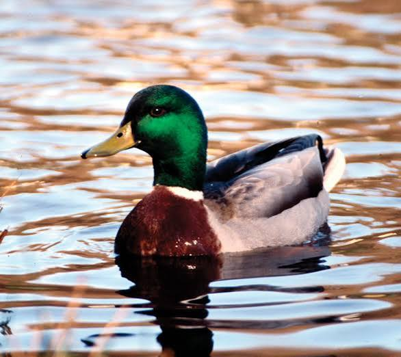
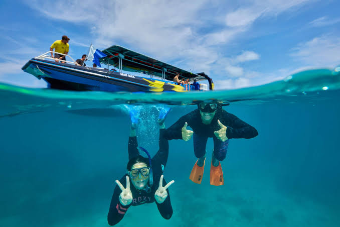

Our purpose is to share the thrill of wild rivers with people of all ages, while prioritizing safety, respect for nature, and creating memories that last a lifetime. We believe adventure builds courage, brings people together, and connects us to the beauty of our world.

Exciting Expeditions
History
Exciting Expeditions began in 2010 as a small team of local river guides exploring the Tana River. Over the years we have grown to serve thousands of guests across Kenya and East Africa, keeping our promise of safe, fun, and responsible adventure every single day.

Our Journey
From humble beginnings to becoming a leading adventure company, our journey has been fueled by passion, dedication, and a love for the rivers we navigate. We have expanded our offerings to include multi-day expeditions, family-friendly trips, and specialized tours for thrill-seekers.
Adventure Awaits You


